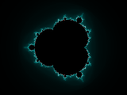

Gnofract 4D #
Introduction #
There is no excellent beauty which hath not some strangeness in the proportion. – Francis Bacon
Gnofract 4D is a program which draws complex mathematical objects known as fractals, including the Mandelbrot and Julia sets and many others. It allows you to treat a fractal which has more than one parameter as a four-dimensional object and interactively view slices of this object from arbitrary angles, giving rise to some very unusual images.
This user’s manual provides a tutorial introduction to Gnofract 4D and the mathematical background behind it, information on how to use the graphical interface, and reference material on the language used to write fractal formulas.
Using Gnofract 4D #
Gnofract 4D’s screen layout is deliberately simple. Most of the screen is taken up by a view of the fractal you’re investigating. By default, this is the Mandelbrot set. You can directly click on this to zoom. The toolbar provides quick access to frequently used functions, and more complex properties of the fractal are accessed through dialog boxes brought up via the menu bar.
Initially, just play around - after all, generating fractals isn’t meant to be work. If you make a change you don’t like, just hit Undo.
Interacting with the Fractal #
Each fractal is an infinitely complex image, which you can see a slice of in the main window. By left-clicking on the window, you can zoom in to view finer and finer details. Just click on an area you like to view it more closely. If you click and drag with the left button, you can draw a white box around an area. When you let go, you zoom in so that the area inside that box fills the window.
To zoom back out, click with the right button. You can also press Home to return all parameters to the starting point for this fractal, Control+Home to reset the zoom only, or use Undo to go back one step. There isn’t a click and drag feature for the right button.
Clicking with the middle button rotates the view by 90 degrees in the xz and yw axes. If you’re currently looking at the Mandelbrot set, you’ll get a Julia set, and vice versa. If you’re looking at something else, you’ll get something weird. Note that clicking this twice doesn’t take you back to where you started: the screen also gets recentered on the point you clicked, so middle-clicking twice will normally give you a perturbed, deformed-looking Mandelbrot.
The cursor keys pan around the image. Hold down
Control+
Non-4D formulas. Some fractal formulas (typically those originally written for Fractint or UltraFractal) don’t support full 4D operation. (Gnofract 4D determines this by whether the formula uses the #zwpixel variable.) In this case, the widgets for rotating in other dimensions, warping, and the middle mouse button will be disabled.
Working with Files #
Gnofract 4D uses several different types of file. These have different purposes as listed in the table below.
| File Type | Extensions | Description |
|---|---|---|
| Parameter File | .fct |
A parameter file is a small text file which contains all the settings required to produce a particular image, such as the position of the viewer along the X axis and the coloring scheme used. The parameter file lists the formula used, but doesn’t contain the entire formula, so if you invent a new formula and want to share parameter files which use it, you need to distribute the formula file as well. Fractint uses .par files for this purpose and UltraFractal uses .upr. Unfortunately Gnofract 4D can’t read those formats (yet). |
| Image File | .tga, .jpg,.png |
Gnofract 4D supports TARGA, JPEG and PNG file formats for image output. No information about the fractal parameters is stored in the image file, so if you want to carry on exploring from a particular point you need to save a parameter file as well. Gnofract 4D can’t load image files, only save them. Choose File > Save Image to save an image. I recommend using PNG images for high quality output, and JPEGs only when image size is important, because JPEGs introduce artifacts which blur the fine details of your fractal. |
| Formula File | .frm, .ufm |
A formula file is a collection of formulas, each of which is a description of the algorithm used to draw a particular kind of fractal, expressed in a simple programming language (see
Formula Language Reference for language details). Both Gnofract 4D and Fractint use .frm as the extension, and UltraFractal uses .ufm. In general, any formula which works in Fractint should work in Gnofract 4D and any which works in Gnofract 4D should work in UltraFractal, but the reverse is not true. |
| Coloring Algorithm File | .cfrm, .ucl |
A coloring algorithm file is a collection of formulas used to assign colors to a fractal. Gnofract 4D combines a coloring algorithm with a formula to produce the final image (this approach is shared with UltraFractal - Fractint restricts you to built-in coloring algorithms). Coloring algorithms are written in the same language as fractal formulas. UltraFractal uses the extension .ucl for its coloring algorithm files. Some of these are compatible with Gnofract 4D but so far not very many. |
| Gradient File | .map, .ggr, .ugr, .cs, .ase |
A gradient file is a list of colors which is used to translate the purely numerical output of the formula into something pretty to look at. Gradients are currently saved only inside the fractal itself, not as separate files. The GIMP uses the extension .ggr for its gradient files; Fractint uses .map for its own, simpler files. UltraFractal uses .ugr - these files contain multiple gradients. Several programs including Adobe ones and https://coolors.co/ support ASE (Adobe Swatch Exchange). |
Tools #
Autozoom #
Autozoom automatically searches for interesting parts of the fractal by zooming in repeatedly, each time choosing the quadrant of the screen which has the largest number of different colors (with some randomization as well). You can start it going, go off for a coffee, and see what it’s found when you return, or guide it by clicking on parts you like as it goes. It’ll stop when the image reaches the minimum size, which is set by default to stop just before you get to the limits of the precision Gnofract 4D offers.
Explorer #
The Explorer helps you find neat-looking fractals easily. It divides the screen into a large central section and smaller “subfractals” which surround it. The central section is the main image
- you can click on this to zoom in, change the color, or perform any operation you can normally. The other images around the edges are “mutant” versions of the main image - they’re formed by starting with the base parameters and randomly changing them a bit. Whenever you change the main image, you get a whole new set of mutants. If you like a mutant more than the main picture, click on it to move it to the middle - it then becomes the main picture and you get 12 new mutants based on the new main image. When you’re satisfied with the results, click the Explorer button again to return to normal mode.
The Shape and Color sliders on the toolbar determines how different the mutants are from the standard image. If Shape’s set to 100, they’re almost unrecognizable - if it’s 0, they’re exactly the same. Similarly if Color’s 100, each mutant is a different color, and 0 keeps the colors all the same.
Formula Browser #
The Formula Browser allows you to look at all the fractal formulas, coloring functions and gradients which are currently loaded formula files. When you select a formula (from the Formula list in the middle), the source window shows you the contents of that formula. You can then use Apply to change the current fractal to use that formula. This also resets the formula’s parameters to their defaults. Alternatively, OK applies the formula and closes the window.
Tips:
-
To load a new formula file, choose File > Open Formula File.
-
If you have changed a formula on disk after using it, choose Refresh to have Gnofract 4D re-read it.
-
If the formula contains errors, Apply and OK will be disabled. Check the Messages window to see what the errors are.
Director #
The Director allows you to create fractal videos. You first define keyframes which are points in the video. Then, for each of them, you specify how long a still image of the keyframe will stay in the video (stopped for), how long the transition is to the next keyframe (transition duration - in frames) and the interpolation type used for the transition from several possibilities. When you hit Render button, Director will render all frames and put them in the directory you selected and then it will create the video using FFmpeg.
Tips:
-
In order to end up with a video file, not just a bunch of images, you need to have ffmpeg compiled with support for zlib and libvpx.
-
You can always save your animation configuration for later use.
-
You can always stop rendering images. As long as you use same animation setting again (for example, saving them before starting rendering), Director will start from where it stopped last time.
Randomize Colors #
Replaces the current gradient with a randomly-generated new one.
Painter #
The painter dialog allows you to change the colors of your fractal by clicking on the place where you want the color to be different. First, select the color you want in the color selector. Then click on the image - the part of the gradient most responsible for the color of that pixel will be updated with the color you chose. Toggle the “painting” button off if you want to interact with the fractal while the painter dialog is up.
Toolbar buttons #
On the left of the toolbar you can see a small preview window, which updates as you change the angle or position buttons, to give you an idea of what the fractal will look like when you release the button.
The first eight toolbar buttons correspond to the ten parameters which define the view. The circular angle buttons, labelled xy to zw, correspond to rotation around the principal planes in four dimensions. They can be changed by dragging the dot around. When you let go, the fractal will update. By the way, the zw angle does work, you just can’t see its effects until you rotate in some other dimensions first.
The square position buttons, pan and wrp (aka Warp), can be used to alter the view. The pan button allows you to pan around the current view. The wrp button allows you to move along the other two axes, resulting in a mutated version of the current image. Click inside one then drag the mouse, watching the preview window update, then release the mouse when you like the results.
The warp menu allows even formulas which weren’t designed to be used with Gnofract 4D to be used in 4D mode. If the current fractal has any complex parameters, they’re listed in this menu. If you select one, that parameter’s value is set to the value of the Z and W coordinates for each pixel. Basically what this means is that the parameter you choose becomes the fourth dimension. NB: If you set an explicit value for the parameter as well, it’ll be ignored.
The Deepen button allows you to increase the current iteration count and tighten the periodicity checking, for those occasions when the auto-deepening and/or auto-tolerance doesn’t get it right. This will generally convert some ‘inside’ pixels to outside and make the image look better, at the cost of longer rendering time. The image size list should be self-explanatory. If you want a size not listed here, use the Preferences dialog. The Undo and Redo buttons should be fairly obvious. You can undo as many times as you like. Note that undo also affects parameters such as color, not just position on screen. Lastly, the Explore button toggles Explorer Mode. See Explorer.
Changing Fractal Settings #
In Gnofract 4D, settings are divided into Fractal Settings, Gradients and Preferences. Fractal Settings and Gradients are saved in the fractal’s .fct file - they are properties of the fractal itself. By contrast, Preferences are your preferences for Gnofract 4D’s general behavior and are saved in Gnofract 4D’s config file (~/.gnofract4d), so they will still be active next time you start Gnofract 4D.
Fractal Settings #
The Formula section allows you to choose the formula used to calculate the fractal, and to set any parameters the formula has. You can modify the formula by choosing Browse, which invokes the Formula Browser. Max Iterations sets the number of iterations a point will go through before we give up and assume it’s a member of the Julibrot. The other parameters on this pane are different depending on the fractal type.
The Outer tab controls the function used to decide what color to draw those points which aren’t part of the fractal set proper. Similarly, the Inner page controls the function used for points which are part of the set.
The Location entryboxes allow you to change the coordinates of the screen center and the image size.
The Angles entryboxes allows you to set the rotation angles. Only values between 0 and 2 * pi are different; values outside this range “wrap” to points inside that range.
The Transforms page allows you to control a list of transformations applied to the image, and any parameters those transforms have.
The General page gives a few options which don’t fit anywhere else. Flip Y Axis causes Y to increase top-to-bottom, rather than bottom-to-top. Periodicity Checking is a method to speed up generation of the fractal. Points inside the fractal eventually settle into a loop, where they repeatedly jump around between the same points (they become ‘periodic’). By noticing this, we can skip calculating the point any further. You will generally want to disable this if you are coloring the inside of the fractal, since it will look rather weird otherwise. Tolerance is the distance between points which we’ll accept as being ‘the same’ for the purposes of periodicity detection. This is automatically adjusted if the ‘auto tolerance’ setting in the preferences is enabled.
The Colors tab allows you to edit the list of colors used to display your fractal. For more complex gradient editing, you can also use the GIMP’s gradient editor.
It is also possible to use the online palette editor tool at https://coolors.co/ to modify the palette. You can start editing the current palette in Coolors by clicking Edit Gradient Online in the Colors tab. When you are done editing, in the Coolors UI choose Export > Copy URL. Then paste into the Gnofract 4D window. This changes the current gradient to the one you edited online.
Preferences #
Image #
Width and Height set the size of the image in pixels. If Maintain Aspect Ratio is checked when you change either the width or height, the other automatically changes to keep the image the same shape. If Auto Deepen is enabled, Gnofract 4D will try to automatically guess how many iterations are required to display the image correctly. Similarly, Auto Tolerance adjusts the periodicity tolerance setting to try and calculate the image quickly but correctly. Antialiasing makes the image look smoother but takes extra time to do. The difference between ‘fast’ and ‘best’ is that fast antialiasing doesn’t bother to recalculate points which are the same color as their neighbors. This speeds things up a lot but can miss a few details sometimes.
Compiler #
Gnofract 4D needs a C compiler to be available at runtime in order to work (it dynamically creates the code to compute a particular formula when you select it). The Compiler page allows you to specify a location for the compiler and options to pass to it. If Gnofract 4D is working fine, generally I suggest you leave those settings alone. However you may be able to get noticeable performance gains by specifying the specific kind of processor you have. For example, some AMD processors will benefit by adding “-mathlon -msse2 -m3dnow” to the compiler flags.
The Formula Search Path lists the directories where Gnofract 4D will look for formulas when a parameter file is loaded.
General #
Number of threads sets how many calculation threads to use. Generally, leave this at 1 unless you have a hyper-threaded or multi-processor computer, in which case set it to 1 greater than the number of cores you have.
Helpers #
Gnofract 4D sometimes need to invoke a helper program. If the default is wrong you can designate a different program here.
Hints #
-
If you zoom into a busy part of the fractal the image can look “noisy”. You can fix this by making the colors change more slowly - go to the “Outer” tab and change the transfer function to ‘sqrt’ or ‘log’ - or change “Density” to a number between 0 and 1 - a density of 0.1 makes the colors change 10 times more slowly.
-
If you have an Inner coloring method other than zero, you may see weird effects unless you disable periodicity checking.
-
If the image looks pixelated, you’ve zoomed in as far as we can go.
Command Reference #
Mouse Commands
| Button | Action |
| Left-click | Zoom in |
| Left-click and drag | Draw rectangle to zoom into. |
| Shift-Left-click | Recenter image on point clicked. |
| Middle-click | Flip to Julia set (or back to Mandelbrot). |
| Right-click | Zoom out. |
| Control-Right-click | Zoom out more quickly. |
Keyboard Shortcuts
| Key | Action |
| (arrow) | Pan image in indicated direction. |
| Ctrl+(arrow) | Pan more quickly in indicated direction. |
| Shift+(arrow) | Mutate image in Z or W directions. |
| Shift+Ctrl+(arrow) | Mutate more quickly. |
| Ctrl+1 | Reset rotation to show the XY (Mandelbrot) plane. |
| Ctrl+2 | Reset rotation to show the ZW (Julia) plane. |
| Ctrl+3 | Reset rotation to show the XZ (Oblate) plane. |
| Ctrl+4 | Reset rotation to show the XW (Parabolic) plane. |
| Ctrl+5 | Reset rotation to show the YZ (Elliptic) plane. |
| Ctrl+6 | Reset rotation to show the WY (Rectangular) plane. |
| Ctrl+A | Display AutoZoom dialog. |
| Ctrl+B | Display formula browser. |
| Ctrl+D | Display the Director (animation) window. |
| Ctrl+E | Enter (or leave) Explorer mode. |
| Escape | Quit full-screen mode. |
| Ctrl+F | Show fractal settings controls. |
| Home | Reset all numeric parameters to their defaults. |
| Ctrl+Home | Reset zoom to default level. |
| Ctrl+I | Save the current image to a file. |
| Ctrl+Shift+I | Add the current fractal to the render queue. |
| Ctrl+R | Create a new random color scheme. |
| Ctrl+Shift+S | Save the current parameters into a new file. |
| Ctrl+Z | Undo the last operation. |
| Ctrl+Shift+Z | Redo an operation after undoing it. |
| F1 | Show help file contents page. |
| F11 | Show main window full-screen. |
About the math #
The Mandelbrot Set #
The Mandelbrot may be defined as the set of all complex numbers which, when you repeatedly square them and add them again, never become infinite. (The official definition of the set is somewhat different: it is the set of points in the complex plane whose corresponding Julia sets are connected. These end up being the same thing.)
We can tell that a number will eventually reach infinity if it ever gets outside a circle of radius 2 around the origin. Unfortunately, we can’t tell in general that a point will never become infinite, so we have to estimate by trying a large number of times before giving up.
In Gnofract 4D, the formula is:
Mandelbrot1 {
init:
z = 0
loop:
z = z^2 + c
bailout:
|z| < 4.0
}
(|z| means the square of the magnitude of z). We calculate the loop
function repeatedly until the bailout condition is false or we’ve
performed the maximum number of iterations. At that point, if we
“bailed out”, we know we’re outside the set: otherwise we’re
(probably) inside.
We do this repeatedly for each position on the screen, setting
c to a different value for each point. This gives
rise to the familiar Mandelbrot set:

All the points inside the set are (as is traditional) coloured black. The points outside the set are different colours depending on how long it takes them to escape from the set. These colours aren’t very mathematically significant, but they look nice.
So what happens if z is initially set to a
complex value other than zero? (Strictly speaking, you shouldn’t do
this. Zero is important because it is the critical
value of z^2+c - other values are not mathematically
meaningful. However, as with most fractal programs, Gnofract 4D allows you
to draw anything which looks interesting, regardless of its
mathematical purity.)
Well, you get a rather odd-looking, deformed M-set. This initial
value, which we’ll call z0, is called the intial
perturbation, and sets which have a non-zero z0
are known as perturbed sets:
Mandelbrot2 {
init:
z = z0
loop:
z = z^2 + c
bailout:
|z| < 4.0
}
The Julia Set #
The Julia set is actually drawn by the same procedure as the
Mandelbrot set. But instead of changing the value of
c for each pixel, we keep c
constant and change z0. There is a different
Julia set for each value of c; here’s the one for c = 0.
BoringJulia {
init:
z = z0
loop:
z = z^2 + 0
bailout:
|z| < 4.0
}
Boring, isn’t it? That’s because we’re just squaring the value at each iteration without adding anything to it. So any value which starts with a magnitude less than 1 will shrink forever (and hence is a member of the set). All other values will grow forever, and so we’ve just discovered a rather inefficient way of drawing perfect circles. If we use a different value of c we get something more interesting:
The Julibrot #
Here we come to the heart of the matter. I said above that both the Julia and Mandelbrot sets are drawn with the same function.
Julibrot(z0,c) {
init:
z = z0
loop:
z = z^2 + c
bailout:
|z| < 4.0
}
The Julibrot function has two complex parameters, or four real ones. In Gnofract 4D I refer to the real parameters as x, y, z, and w: these are c.re , c.im, z0.re and z0.im respectively.
The only difference is which points we choose to draw. To draw the
Mandelbrot set, we keep z0 constant and change
c with each pixel. To draw the Julia set, we keep
c constant and change z0. If
you squint with your brain a bit, you can imagine both sets as
orthogonal “slices” through the same four-dimensional object. In
Gnofract 4D terms, the Mandelbrot set is the xy
plane, and the Julia set is the zw plane. We can
also look at other planes: here’s an image of the
xw plane:

Viewing in Four Dimensions #
However, we can draw any 2D slice we like, not just those which are
parallel to the Julibrot axes. To do this we’ll need to describe our
scene by four things. First, the (x,y,z,w)
coordinates of the center of the screen. Second, a vector for the
x-axis of the screen. This tells us how to change the parameters to
the Julibrot function as we proceed across the screen. Third, a vector
for the y-axis. Fourth and finally, the size of the image. For the
Mandelbrot set, our “default” view, the screen is centered at
[0,0,0,0], the x-vector is [1,0,0,0] and the y-vector is
[0,1,0,0]. The initial size is 4, because the whole Mandelbrot set
fits inside the 2x2 square. We can zoom into the set by changing
x and y and the zoom factor.
If we want to draw other slices, we need to rotate our view through
four dimensions. In 3D, we can rotate in 3 directions: around the
x, y, and z axes. In 4D, we rotate around a plane rather than a line, and we can rotate in 6
directions: around the xy, xz, xw, yz, yw and zw planes. For example, if we rotate through 90
degrees in the xz and yw directions, our screen vectors become
[0,0,1,0] and [0,0,0,1]: in other words, the Julia set. If we rotate
only part of the way, we get a “hybrid” between the two sets, which
looks decidedly odd:

In fact, we can rotate to any angle in each of the planes, creating a whole world of bizarre pictures.
Hypercomplex Fractals and Quaternions #
There are other kinds of fractal which are commonly described as “four-dimensional” - hypercomplex and quaternion-based fractals. Hypercomplex numbers have four components (one real and three imaginary) where complex numbers have two. Since the hypercomplex mandelbrot has two hypercomplex parameters, in Gnofract 4D terms it’s actually an eight-dimensional object. Gnofract 4D allows you to set four of these as part of the view - the other four have to be set via parameters. Gnofract 4D doesn’t support quaternions at present.
Writing Your Own Functions #
When you get tired of the fractal functions which come with Gnofract 4D, you can write your own, or take advantage of thousands of formulas written by other fractal enthusiasts. Gnofract4D can load most fractal formula files written for Fractint (and some written for UltraFractal). However the compiler is not 100% backwards-compatible with Fractint, so unfortunately some fractals can’t be loaded, or will display differently when they do. Gnofract 4D also supports many constructs Fractint doesn’t, so you need to take extra care when writing formulas if you want them to work in Fractint too.
Here are links to some online resources for formula files:
A collection of about 25,000 Fractint formula files by many authors, originally compiled by George C. Martin and currently maintained by Paul N. Lee. Indispensable.
- UltraFractal public formula database Many thousands of formulas by users of UltraFractal. Some of the coloring algorithms and forumlas will work with Gnofract 4D. Please report issues, since I aim to improve compatibility further in future releases.
Writing Your First Formula #
This section steps you through the creation of a new fractal
formula. By the way, the formulas for each of these steps can also be
found in the file formulas/tutorial.frm.
-
Using a text editor, Create a new file called
example.frm(the extension is important - Gnofract 4D uses this to decide whether the file is a formula or a coloring function). -
Enter the following in
example.frm.
MyFormula1 {
; First example formula - this produces a variant on the Mandelbrot set
init:
z = 0
c = #pixel
loop:
z = z*z*c + c*c
bailout:
|z| < 4.0
}
- Start Gnofract 4D, choose File | Open Formula File, and open example.frm. You should see MyFormula in the list of formulas to choose from. Select it and click Apply. You should see an image like this:

-
A few things to note about the formula. It’s divided into named sections, marked with a colon: “init”, “loop”. and “bailout”. The compiler uses these to supply some of the standard scaffolding for a fractal function so you don’t have to. The “loop” statement is the heart of the formula - this is the statement which is run repeatedly and which defines the shape of your fractal.
-
At this point, the widgets for rotating the image in 4D will be disabled, because your formula doesn’t use any of the 4D options. Let’s turn those on. Edit your formula so it reads:
MyFormula2 {
; Second example - introduce 4D
init:
z = #zwpixel ; take initial value from 4D position
c = #pixel
loop:
z = z*z*c + c*c
bailout:
|z| < 4.0
}
-
Then hit Refresh on the Formula Browser window. You should now find that all the options are enabled. This is because the image now depends on all 4 components of the 4D space, via #pixel and #zwpixel.
-
Next let’s add some parameters to our function:
MyFormula3 {
; Third example - add a parameter
init:
z = #zwpixel
c = #pixel
loop:
z = @myfunc(z*z*c) + @factor * z + c*c
bailout:
|z| < 4
default:
param factor
default = (1.0,0.5)
endparam
}
- Hit Refresh again, then Edit > Fractal Settings to show the formula settings. You should two extra parameters in addition to the standard “Max Iterations” option: myfunc, with a drop-down list of functions, and fac (or Factor) with a draggable 4-way widget and 2 edit boxes. If you set myfunc to sqr and set factor to (-1,0.5) you should see:
- Parameters like this are a quick way to add more options to your fractal. Listing them in the “default” section is optional but provides a way to pre-populate your formula with values that work well. If you leave the default out Gnofract 4D will use “ident” for functions and 0 for numeric ones.
Formula Language Reference #
Operators
| Name | Description | Argument Types | Return Type |
|---|---|---|---|
| != | Inequality operator. Compare two values and return true if they are different. | Int, Int | Bool |
| Float, Float | Bool | ||
| Complex, Complex | Bool | ||
| Bool, Bool | Bool | ||
| % | Modulus operator. Computes the remainder when x is divided by y. Not to be confused with the complex modulus. | Int, Int | Int |
| Float, Float | Float | ||
| && | Logical AND. | Bool, Bool | Bool |
| * | Multiplication operator. | Int, Int | Int |
| Float, Float | Float | ||
| Complex, Complex | Complex | ||
| Hyper, Hyper | Hyper | ||
| Hyper, Float | Hyper | ||
| Color, Float | Color | ||
| + | Adds two numbers together. | Int, Int | Int |
| Float, Float | Float | ||
| Complex, Complex | Complex | ||
| Hyper, Hyper | Hyper | ||
| Color, Color | Color | ||
| - | Subtracts two numbers | Int, Int | Int |
| Float, Float | Float | ||
| Complex, Complex | Complex | ||
| Hyper, Hyper | Hyper | ||
| Color, Color | Color | ||
| / | Division operator | Float, Float | Float |
| Complex, Float | Complex | ||
| Complex, Complex | Complex | ||
| Hyper, Float | Hyper | ||
| Color, Float | Color | ||
| < | Less-than operator. Compare two values and return true if the first is less than the second. | Int, Int | Bool |
| Float, Float | Bool | ||
| Complex, Complex | Bool | ||
| <= | Less-than-or-equal operator. Compare two values and return true if the first is less than or equal to the second. | Int, Int | Bool |
| Float, Float | Bool | ||
| Complex, Complex | Bool | ||
| == | Equality operator. Compare two values and return true if they are the same. | Int, Int | Bool |
| Float, Float | Bool | ||
| Complex, Complex | Bool | ||
| Bool, Bool | Bool | ||
| > | Greater-than operator. Compare two values and return true if the first is greater than the second. | Int, Int | Bool |
| Float, Float | Bool | ||
| Complex, Complex | Bool | ||
| >= | Greater-than-or-equal operator. Compare two values and return true if the first is greater than or equal to the second. | Int, Int | Bool |
| Float, Float | Bool | ||
| Complex, Complex | Bool | ||
| ^ | Exponentiation operator. Computes x to the power y. | Float, Float | Float |
| Complex, Float | Complex | ||
| Complex, Complex | Complex | ||
| not | Logical NOT. | Bool | Bool |
| || | Logical OR. | Bool, Bool | Bool |
Functions
| Name | Description | Argument Types | Return Type |
|---|---|---|---|
| #rand | Each time this is accessed, it returns a new pseudo-random complex number. This is primarily for backwards compatibility with Fractint formulas - use the random() function in new formulas. | Complex | |
| #random | Each time this is accessed, it returns a new pseudo-random complex number. This is primarily for backwards compatibility with Fractint formulas - use the random() function in new formulas. | Complex | |
| @fn1 | Predefined function parameter used by Fractint formulas | Complex | Complex |
| @fn2 | Predefined function parameter used by Fractint formulas | Complex | Complex |
| @fn3 | Predefined function parameter used by Fractint formulas | Complex | Complex |
| @fn4 | Predefined function parameter used by Fractint formulas | Complex | Complex |
| abs | The absolute value of a number. abs(3) = abs(-3) = 3. abs() of a complex number is a complex number consisting of the absolute values of the real and imaginary parts, i.e. abs(a,b) = (abs(a),abs(b)). | Int | Int |
| Float | Float | ||
| Complex | Complex | ||
| acos | Inverse cosine function. | Float | Float |
| Complex | Complex | ||
| Hyper | Hyper | ||
| acosh | Inverse hyperbolic cosine function. | Float | Float |
| Complex | Complex | ||
| Hyper | Hyper | ||
| alpha | The alpha component of a color. Can be assigned to. | Color | Float |
| asin | Inverse sine function. | Float | Float |
| Complex | Complex | ||
| Hyper | Hyper | ||
| asinh | Inverse hyperbolic sine function. | Float | Float |
| Complex | Complex | ||
| Hyper | Hyper | ||
| atan | Inverse tangent function. | Float | Float |
| Complex | Complex | ||
| Hyper | Hyper | ||
| atan2 | The angle between this complex number and the real line, aka the complex argument. | Complex | Float |
| atanh | Inverse hyperbolic tangent function. | Float | Float |
| Complex | Complex | ||
| Hyper | Hyper | ||
| blend | Blend two colors together in the ratio given by the 3rd parameter. | Color, Color, Float | Color |
| blue | The blue component of a color. Can be assigned to. | Color | Float |
| bool | Construct a boolean. It's not really required (bool x = bool(true) is just the same as bool x = true) but is included for consistency. | Bool | Bool |
| cabs | The complex modulus of a complex number z. cabs(a,b) is equivalent to sqrt(a*a+b*b). This is also the same as sqrt(|z|) | Complex | Float |
| ceil | Round up to the next highest number. | Float | Int |
| Complex | Complex | ||
| cmag | The squared modulus of a complex or hypercomplex number z. cmag(a,b) is equivalent to a*a+b*b. This is the same as |z|. | Complex | Float |
| Hyper | Float | ||
| color | Constructs a new color from floating point red, green, blue and alpha components. Equivalent to rgba. | Float, Float, Float, Float | Color |
| complex | Construct a complex number from two real parts. complex(a,b) is equivalent to (a,b). | Float, Float | Complex |
| compose | Composite the second color on top of the first, with opacity given by the 3rd parameter. | Color, Color, Float | Color |
| conj | The complex conjugate. conj(a,b) is equivalent to (a,-b). | Complex | Complex |
| Hyper | Hyper | ||
| cos | trigonometric sine function. | Float | Float |
| Complex | Complex | ||
| Hyper | Hyper | ||
| cosh | Hyperbolic cosine function. | Float | Float |
| Complex | Complex | ||
| Hyper | Hyper | ||
| cosxx | Incorrect version of cosine function. Provided for backwards compatibility with equivalent wrong function in Fractint. | Complex | Complex |
| Hyper | Hyper | ||
| cotan | Trigonometric cotangent function. | Float | Float |
| Complex | Complex | ||
| Hyper | Hyper | ||
| cotanh | Hyperbolic cotangent function. | Float | Float |
| Complex | Complex | ||
| Hyper | Hyper | ||
| exp | exp(x) is equivalent to e^x | Float | Float |
| Complex | Complex | ||
| Hyper | Hyper | ||
| flip | Swap the real and imaginary parts of a complex number. flip(a,b) = (b,a). | Complex | Complex |
| Hyper | Hyper | ||
| float | Construct a floating-point number. | Float | Float |
| floor | Round down to the next lowest number. | Float | Int |
| Complex | Complex | ||
| fn1 | Predefined function parameter used by Fractint formulas | Complex | Complex |
| fn2 | Predefined function parameter used by Fractint formulas | Complex | Complex |
| fn3 | Predefined function parameter used by Fractint formulas | Complex | Complex |
| fn4 | Predefined function parameter used by Fractint formulas | Complex | Complex |
| gradient | Look up a color from the default gradient. | Float | Color |
| green | The green component of a color. Can be assigned to. | Color | Float |
| hsl | Create a color from hue, saturation and lightness components. The alpha channel is set to to 1.0 (=100%). | Float, Float, Float | Color |
| hsla | Create a color from hue, saturation and lightness components and an alpha channel. | Float, Float, Float, Float | Color |
| hsv | Create a color from hue, saturation and value components. HSV is a similar color model to HSL but has a different valid range for brightness. | Float, Float, Float | Color |
| hue | The hue of a color. | Color | Float |
| hyper | Construct a hypercomplex number with a real and 3 imaginary parts. Can be passed either 2 complex numbers or 4 floating-point numbers. hyper(a,b,c,d) is equivalent to the shorthand (a,b,c,d). | Float, Float, Float, Float | Hyper |
| Complex, Complex | Hyper | ||
| hyper_j | The 3rd component of a hypercomplex number. Can be assigned to. hyper_j(a,b,c,d) = c. | Hyper | Float |
| hyper_jk | The 3rd and 4th parts of a hypercomplex number. Can be assigned to. hyper_jk(a,b,c,d) = (c,d). | Hyper | Complex |
| hyper_k | The 4th component of a hypercomplex number. Can be assigned to. hyper_k(a,b,c,d) = d. | Hyper | Float |
| hyper_ri | The real and imaginary parts of a hypercomplex number. Can be assigned to. hyper_ri(a,b,c,d) = (a,b). | Hyper | Complex |
| ident | Do nothing. ident(x) is equivalent to x. This function is useless in normal formulas but comes in useful as a value for a function parameter to a formula. For example, a general formula like z = @fn1(z*z)+c can be set back to a plain Mandelbrot by setting fn1 to ident. Note: ident() is compiled out so there's no speed penalty involved. | Int | Int |
| Float | Float | ||
| Complex | Complex | ||
| Bool | Bool | ||
| Hyper | Hyper | ||
| imag | Extract the imaginary part of a complex or hypercomplex number. imag(a,b) = b. imag() is unusual in that it can be assigned to: imag(z) = 7 changes the imag part of z. | Complex | Float |
| Hyper | Float | ||
| imag2 | The square of the imaginary part of a complex number. real2(a,b) = b*b. While not a generally useful function, this is provided to ease porting of files from older Gnofract 4D versions. | Complex | Float |
| int | Construct an integer. To convert a float to an int, use floor, ceil, round or trunc instead. | Int | Int |
| log | The natural log. | Float | Float |
| Complex | Complex | ||
| Hyper | Hyper | ||
| lum | The luminance (or brightness) of a color. | Color | Float |
| manhattan | The Manhattan distance between the origin and complex number z. manhattan(a,b) is equivalent to abs(a) + abs(b). | Complex | Float |
| manhattanish | A variant on Manhattan distance provided for backwards compatibility. manhattanish(a,b) is equivalent to a+b. | Complex | Float |
| manhattanish2 | A variant on Manhattan distance provided for backwards compatibility. manhattanish2(a,b) is equivalent to (a*a + b*b)^2. | Complex | Float |
| max | Returns the larger of its two arguments. | Float, Float | Float |
| max2 | max2(a,b) returns the larger of a*a or b*b. Provided for backwards compatibility. | Complex | Float |
| mergemultiply | Multiplies colors together. Result is always darker than either input. | Color, Color | Color |
| mergenormal | Returns second color, ignoring first. | Color, Color | Color |
| min | Returns the smaller of its two arguments. | Float, Float | Float |
| min2 | min2(a,b) returns the smaller of a*a or b*b. Provided for backwards compatibility. | Complex | Float |
| neg | No documentation yet. | Int | Int |
| Float | Float | ||
| Complex | Complex | ||
| Hyper | Hyper | ||
| rand | Each time this is accessed, it returns a new pseudo-random complex number. This is primarily for backwards compatibility with Fractint formulas - use the random() function in new formulas. | Complex | |
| real | Extract the real part of a complex or hypercomplex number. real(a,b) = a. real() is unusual in that it can be assigned to: real(z) = 7 changes the real part of z. | Complex | Float |
| Hyper | Float | ||
| real2 | The square of the real part of a complex number. real2(a,b) = a*a. While not a generally useful function, this is provided to ease porting of files from older Gnofract 4D versions. | Complex | Float |
| recip | The reciprocal of a number. recip(x) is equivalent to 1/x. Note that not all hypercomplex numbers have a proper reciprocal. | Float | Float |
| Complex | Complex | ||
| Hyper | Hyper | ||
| red | The red component of a color. Can be assigned to. | Color | Float |
| rgb | Create a color from three color components. The alpha channel is set to to 1.0 (=100%). | Float, Float, Float | Color |
| rgba | Create a color from three color components and an alpha channel. | Float, Float, Float, Float | Color |
| round | Round to the nearest number (0.5 rounds up). | Float | Int |
| Complex | Complex | ||
| sat | The saturation of a color. | Color | Float |
| sin | trigonometric sine function. | Float | Float |
| Complex | Complex | ||
| Hyper | Hyper | ||
| sinh | Hyperbolic sine function. | Float | Float |
| Complex | Complex | ||
| Hyper | Hyper | ||
| sqr | Square the argument. sqr(x) is equivalent to x*x or x^2. | Int | Int |
| Float | Float | ||
| Complex | Complex | ||
| Hyper | Hyper | ||
| sqrt | The square root. The square root of a negative float number is NaN (ie it is NOT converted to complex). Thus sqrt((-3,0)) != sqrt(-3). | Float | Float |
| Complex | Complex | ||
| Hyper | Hyper | ||
| tan | trigonometric sine function. | Float | Float |
| Complex | Complex | ||
| Hyper | Hyper | ||
| tanh | Hyperbolic tangent function. | Float | Float |
| Complex | Complex | ||
| Hyper | Hyper | ||
| trunc | Round towards zero. | Float | Int |
| Complex | Complex | ||
| zero | Returns zero. | Int | Int |
| Float | Float | ||
| Complex | Complex |
Symbols
| Name | Description | Argument Types | Return Type |
|---|---|---|---|
| #center | Where the center of the image is located on the complex plane | Complex | |
| #color | Set this from a coloring function to directly set the color instead of using a gradient | Color | |
| #fate | The fate of a point can be used to distinguish between different basins of attraction or whatever you like. Set this to a number from 2 to 128 to indicate that a different 'fate' has befallen this point. 0 indicates the point has diverged, 1 that it has been trapped, >1 whatever you like. Can only be usefully updated in the #final section. | Int | |
| #index | The point in the gradient to use for the color of this point. | Float | |
| #inside | Set this in the final section of a formula to override whether a point is colored with the inside or outside coloring algorithm. This is mainly useful in conjuction with #fate. | Bool | |
| #magn | The magnification factor of the image. This is the number of times the image size has doubled, or ln(4.0/size) | Float | |
| #maxit | No documentation yet. | Int | |
| #maxiter | No documentation yet. | Int | |
| #numiter | The number of iterations performed. | Int | |
| #pi | The constant pi, 3.14159... | Float | |
| #pixel | The (X,Y) coordinates of the current point. When viewing the Mandelbrot set, this has a different value for each pixel. When viewing the Julia set, it remains constant for each pixel. | Complex | |
| #solid | Set this to true in a coloring function to use the solid color rather than the color map. | Bool | |
| #tolerance | 10% of the distance between adjacent pixels. | Float | |
| #xypixel | The (X,Y) coordinates of the current point. When viewing the Mandelbrot set, this has a different value for each pixel. When viewing the Julia set, it remains constant for each pixel. | Complex | |
| #z | No documentation yet. | Complex | |
| #zwpixel | The (Z,W) coordinates of the current point. (See #pixel for the other two coordinates.) When viewing the Mandelbrot set, this remains constant for each pixel on the screen; when viewing the Julia set, it's different for each pixel. Initialize z to some function of this to take advantage of 4D drawing. | Complex | |
| @p1 | Predefined parameter used by Fractint formulas | Complex | |
| @p2 | Predefined parameter used by Fractint formulas | Complex | |
| @p3 | Predefined parameter used by Fractint formulas | Complex | |
| @p4 | Predefined parameter used by Fractint formulas | Complex | |
| @p5 | Predefined parameter used by Fractint formulas | Complex | |
| @p6 | Predefined parameter used by Fractint formulas | Complex | |
| maxit | No documentation yet. | Int | |
| maxiter | No documentation yet. | Int | |
| p1 | Predefined parameter used by Fractint formulas | Complex | |
| p2 | Predefined parameter used by Fractint formulas | Complex | |
| p3 | Predefined parameter used by Fractint formulas | Complex | |
| p4 | Predefined parameter used by Fractint formulas | Complex | |
| p5 | Predefined parameter used by Fractint formulas | Complex | |
| p6 | Predefined parameter used by Fractint formulas | Complex | |
| pi | The constant pi, 3.14159... | Float | |
| pixel | The (X,Y) coordinates of the current point. When viewing the Mandelbrot set, this has a different value for each pixel. When viewing the Julia set, it remains constant for each pixel. | Complex | |
| z | No documentation yet. | Complex |
Gnofract 4D Internals #
This section explains how Gnofract 4D is structured. You don’t need to know any of this to use the program, but it may come in handy if you want to change it or contribute to its development (which you’re heartily encouraged to do!).
Gnofract 4D is implemented primarily in Python, with some C++
extensions. Extensive use
is made of Python unittest framework to keep everything working - each
Python file foo.py is accompanied by
tests/test_foo.py, which contains unit tests for that
file’s features. ‘test.py’ for each folder runs all of the tests.
Source Code Layout #
The important directories in the source are:
| Directory | Contents |
|---|---|
fract4d |
This contains all the non-GUI-related, relatively platform-independent parts of the code. This is in case it ever needs to be ported to another environment (eg run on a server without a GUI as part of a cluster). The main class which represents a fractal is in fractal.py. This holds references to the compiled code, the formula and colorfunc definitions, the parameters and the colormap. It also handles loading and saving information from a .fct file, and provides wrappers for some of the gnarlier C++ extension functions. |
fract4d_compiler |
This contains all the files of the compiler (see below). The main class is fc.py |
fract4d/c |
This contains the C++ extension code which is compiled to produce fract4dc.so. This is divided into a set of classes which communicate primaily via interfaces. The main responsibility of this code is to call the ‘pointFunc’ (the function which calculates a single pixel) once for each point on the image. This code also does the bulk of the ‘4D’ manipulation -vectors.h contains code for 4-vectors and 4x4 matrix math. This library also handles multi-threaded calculations, parcelling out the work to multiple MTFractWorkers via the queue in threadpool.h |
fract4dgui |
This contains the python code which implements the GUI. It uses PyGTK3 as the GUI toolkit. Basically there’s one class per dialog or custom control, and a few other for utility purposes. The central class is gtkfractal, which wraps a fractal and displays the results of the calculation in a window. |
Compiler #
The most complicated part of Gnofract 4D is the compiler. This takes as input an UltraFractal or Fractint formula file, and produces C code. We then invoke a C compiler (eg gcc) to produce a shared library containing code to generate the fractal which we dynamically load.
The UltraFractal manual is the best current description of the formula file format, though there are some UltraFractal features which are not yet supported. You can download it from https://www.ultrafractal.com/download/uf6-manual.pdf
The implementation is based on the outline in “Modern Compiler Implementation in ML: basic techniques” (Appel 1997, Cambridge). It doesn’t do any optimization at this point, leaving that to the C compiler used as a back-end. It would be worthwhile to do some simple optimization (eg constant-folding, removing multiplication by 1.0) because the C compiler refuses to do this to floating point numbers.
Overall structure: The
PLY package
is used to do lexing and SLR parsing - it’s in
lex.py and
yacc.py. fractlexer.py and
fractparser.py are the lexer and parser
definitions, respectively. They produce as output an abstract syntax
tree (defined in the Absyn module). The
Translate module type-checks the code,
maintains the symbol table (symbol.py) and
converts it into an intermediate form (ir.py).
Canon performs several simplifying passes on
the IR to make it easier to deal with, then
codegen converts it into a linear sequence of
simple C instructions. stdlib.py contains the
‘standard library’ of mathematical functions, like cosh(z). It’s at
this point that complex and hypercomplex variables are expanded out
into pairs of floating point numbers - the C code is oblivious to the
complex numbers. Finally we invoke the C compiler to convert to a
native code shared library.
At runtime the different phases happen at different times. First, the entire .frm file is lexed and parsed. Then when a particular formula is selected, it’s translated and syntax-checked. The actual code is only generated just before the fractal is drawn. This phase is repeated whenever the function parameters are changed (eg @fn1 is set to ‘cosh’).
Probably the ugliest part of the code is the handling of parameters. Numeric parameters like floats are passed in as an array, and the C++ code and Python code need to collaborate to work out which indices into this array correspond to which params- this is done by sorting them into alphabetic order. In general this area is a bit of a mess.
Threading #
One of the weirder parts of the code is how we deal with threading. Basically we want the calculation of the fractal to happen on a different thread (or multiple threads for SMP) from the main UI, so you can interrupt at any point. This is complicated by the fact that Python only allows a single thread in the Global Interpreter Lock, and that PyGTK is often compiled by Linux distribution vendors without thread support, meaning this lock is not released when running the GTK main loop. (This last is probably nottrue any more, but I haven’t checked.)
The way out of this is that the additional threads live only in the
C++ code, where they are invisible to the Python code and GTK. When
pycalc is called with asynchronous=True, it spawns a
thread to do the calculation, which may in turn spawn more workers if
we want multiple threads. These all write to the image buffer and
report back what they’re doing by writing messages into a pipe. This
pipe is added to the list of things the GTK main loop monitors, so
whenever a new message appears we get a callback into the gtkfractal
code, interleaved with the normal GTK events. We can interrupt a
calculation in progress by setting a var which the calculation threads
check frequently - they then abandon their work and quit.
Warning: Multiple threads and C++ exceptions do not coexist well on some libstdc++’s. Gnofract 4D was originally written not to use exceptions as a result. This may no longer be an issue but I haven’t tried it.
Bugs and Known Issues #
Please report any bugs you encounter, via
About Gnofract 4D #
This is Gnofract 4D version 4.3. You can find the most recent version of Gnofract 4D from https://github.com/edyoung/gnofract4d
Credits and copyright #
Gnofract 4D is Copyright 1999-2020 Edwin Young edwin@bathysphere.org , and is distributed under the BSD license. See the file “LICENSE” for details.
Gnofract 4D was originally based on a program called Gnofract, written by Aurelien Alleaume though none of the original code remains in the current version. Gnofract could once be obtained from http://www.multimania.com/mason but this no longer appears to work.
Branko Kokanovic developed and contributed the animation feature. Chris Le Sueur provided parts of the gradient editing feature. Henryk Trappmann provided HSV gradient support. The man page was contributed by Aleksander Adamowski. Rachel Mant maintained the project for several years and provided many useful updates. Chris Mayo modernized a lot of code and made the Python 3 update possible. Alberto Gonzalez and Guanchor Ojeda Hernndez have refactored and improved the code considerably.
The formula language which Gnofract 4D uses originated in Fractint and was substantially enhanced in UltraFractal. However the compiler implementation does not share any code with those programs.
The Gnofract 4D distribution contains palette (.map) files by a number of
authors which were originally distributed with
Fractint under somewhat murky
licensing conditions. It also contains a copy of “standard.ucl”,
originally distributed with
UltraFractal, by kind
permission of Frederik Slijkerman, Damien Jones, and Kerry Mitchell.
blatte1.ugr and blatte2.ugr are included by kind permission of
‘Blatte’. The formulas
in Sterling2.frm are translations of formulas originally created by
Tad Boniecki for use with the SterlingWare 2 fractal program.
lex.py and yacc.py come from
the PLY package, and are distributed under the BSD license.
Some of the menu icons are taken or adapted from
the